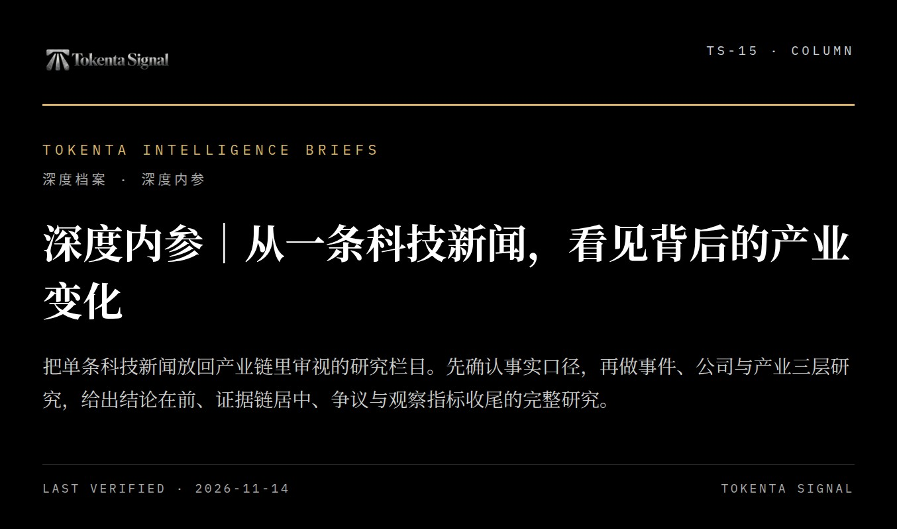
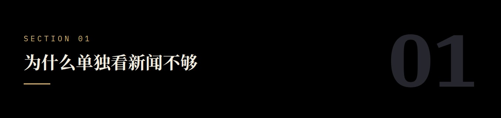
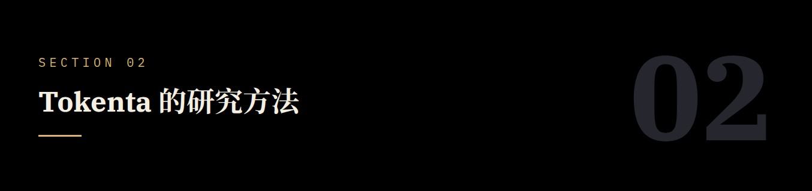
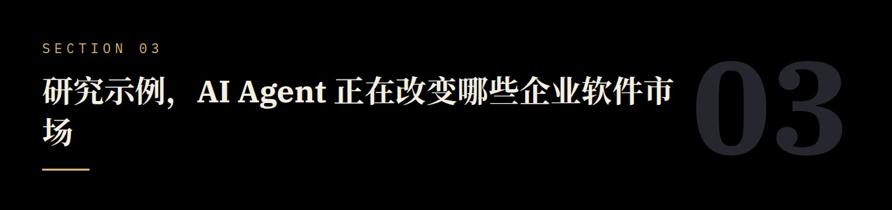
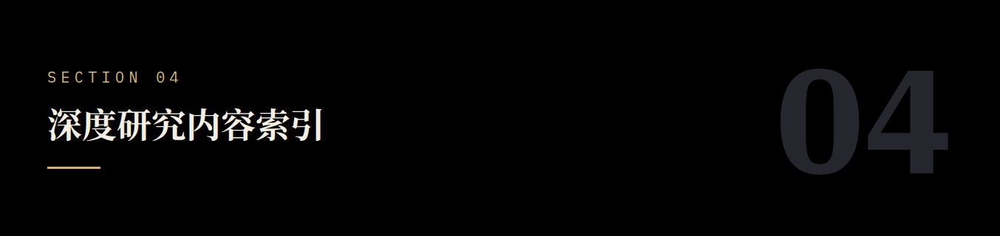
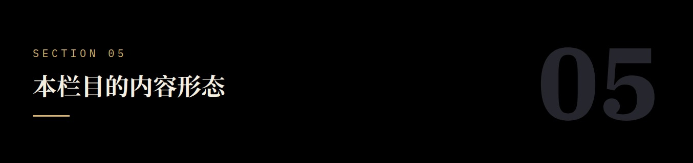

每天都有模型发布、融资官宣和收购消息，单条新闻能回答发生了什么，回答不了市场结构正在往哪里变。一家厂商把智能体塞进表格和会议，表面看是功能上新，放到一年尺度里看，它改的是企业软件的入口归属。入口一旦转移，原有软件的定价权、数据沉淀和续约理由都会跟着松动。
深度内参做的事情，是把分散的事件放回产业链里审视。本栏目不追逐单日热度，先确认事实口径，再追踪同一主题在不同公司、不同环节上的连续动作，最后给出可以被后续事实推翻的判断。判断写明证据边界，读者能顺着来源自己复核，也能在新数据出现时知道哪一条结论需要修正。

新闻的单位是事件，产业的单位是结构。事件有明确的时间和主角，结构包含供给、需求、渠道和成本的长期关系。只看事件，容易把厂商的发布节奏误读成客户的采用节奏，把一轮融资的估值误读成真实的收入规模，把产品演示里的能力误读成已经交付的生产能力。
企业软件市场尤其如此。采购周期长，替换成本高，数据与权限的约束多。一项智能体能力从发布到进入预算，要经过安全审查、部署形态确认、与现有系统的集成和效果验证。中间任何一环卡住，发布会上成立的功能，在客户现场就落不了地。深度研究必须把这些中间环节逐个拆开看。
以收购为例，签约新闻当天能确认的只有交易意向与交易结构，价格经常没有官方口径，交割还要等监管程序。把签约写成已经完成整合，把媒体估算的价格写成成交价，都是单条新闻常见的误读。深度内参对这类事件会跟踪到交割与产品整合阶段，再判断它对市场份额的实际影响。

第一步做事件研究。把同一事件的官方原文、监管或交易所文件、可靠媒体报道按时间排好，确认日期、金额口径和状态。已签约、已交割、拟推出和进入私测是四种不同状态，写作时逐项分开，媒体转述的数字单独标注来源，不与官方披露混写。
第二步做公司研究。沿着一家公司的产品、客户、收入结构和管理层表述往回追，判断一次动作是补短板、抢入口还是守住既有合同。第三步做产业研究，把同环节的其他玩家放进同一张表里比对，看是单家公司的动作，还是整个环节都在移动。
第四步拆技术与商业模式。技术上看能力边界、部署形态和依赖条件，商业上看收费方式、获客渠道和续约逻辑。第五步放进全球竞争格局，核对不同市场在数据规则、行业监管和基础设施上的差异。最后一步是交叉验证，同一结论至少要有两个独立来源支撑，找不到第二来源的判断降级为观察，不写成结论。
来源分级贯穿全程。公司官方发布与监管文件列为一级来源，署名媒体的实地报道列为二级来源，公司自报的经营数字单独标注自报口径。引用数字时同时写清币种、日期与资金性质，融资、估值、营收与订单互不混用。核验日期写进每篇文末，过期信息在后续文章里更新，不直接沿用旧数字。

先给结论。智能体对企业软件的第一轮冲击，集中在入口、部署和执行三个层面。模型厂商正在把办公入口收进自己的产品，部署形态成为大客户采购的前置条件，安全与运维这类结果明确的环节率先长出独立的智能体公司。传统软件厂商的应对方式以并购为主，买团队、买场景数据，补自己缺失的执行能力。
先把市场分清。企业软件按环节可以拆成办公协作、客户关系与客服、软件研发与运维、安全、垂直行业应用五大块。智能体的渗透速度并不均匀，任务边界清楚、结果可以量化、失败成本可控的环节跑得最快，涉及核心数据与合规责任的环节最慢。下面的五张研究卡片，分别对应五个正在发生变化的环节。
证据链按时间与环节排列。办公环节看 Anthropic 的产品动作，部署环节看自托管方案的出现，安全环节看 OpenAI 的产品拆分，并购环节看 Salesforce 与 Harvey 的收购，独立公司环节看 Traversal 的融资。每条证据都标注了出处与口径，官方发布与媒体报道分开计算可信度。
争议同样清楚。上述证据多数来自厂商发布与融资事件，缺少客户侧的续约率、实际节省工时和故障率等经营数据。发布和私测不等于规模采用，融资估值不等于收入质量。后续观察盯住四项指标，办公套件的付费席位变化，自托管方案何时结束私测并公布定价，并购标的整合后的产品留存，独立智能体公司的下一轮融资是否还能守住估值。
办公入口，模型厂商直接下场
结论 办公协作的入口正在从传统套件向模型厂商偏移，模型厂商开始直接提供表格、白板、数据看板与会议产品。
证据 Anthropic 2026 年 11 月 10 日官方发布，Claude Sheets 与 Whiteboards 进入 Beta，Claude Data 正式上线。本公众号 Issue 216 已核验该官方原文。
争议或限制 Beta 产品的付费席位与客户留存数据未公开，功能发布与规模采用之间仍有距离。
后续观察 办公套件是否单独定价，企业客户公开案例的数量与行业分布。
一级来源，Anthropic 官方博客原文，2026-11-14 复核。
部署形态，大客户采购的前置条件
结论 智能体竞争开始拼部署形态，编排、凭证与会话数据留在客户环境，正在成为面向大客户的采购卖点。
证据 Anthropic 官方文档确认，自托管 Claude Managed Agents 于 2026 年 11 月 12 日开放私测，企业可在自有云或本地运行完整智能体服务，沙箱、凭证与会话历史留在客户侧，模型调用仍发给客户选定的提供方。本公众号 Issue 223 已核验该报道。
争议或限制 产品仍处私测阶段，定价与全面上线时间未公布。模型本身并未搬进客户机房，每次调用仍走外部提供方，数据主权的边界需要逐项看合同。
后续观察 私测转正式服务的时间，支持的模型提供方范围，金融与医疗等强监管行业的公开采用案例。
一手来源为 Anthropic 官方文档，产品状态以私测表述，不写成已正式上线。
安全攻防，智能体流水线成型
结论 安全软件的竞争点正在从单点检测转向自动修复流水线，发现、验证与修复被打包成一条可交付的执行链。
证据 OpenAI 2026 年 11 月 12 日官方发布 Daybreak Red Team 与 Defense Factory，两款产品均基于 GPT-6 Cyber。Red Team 做 Web 应用渗透测试与漏洞验证，Defense Factory 把漏洞发现、验证与修复做成流水线，产出带测试的补丁请求供工程师复核。本公众号 Issue 227 已核验该官方页面。
争议或限制 两款产品的误报率、修复成功率与客户规模未公开可比数据，早期访问阶段的实际效果仍待客户侧验证。
后续观察 早期访问客户名单，流水线产出补丁的实际合并率，与现有安全工具链的集成深度。
一级来源，OpenAI 官方 Cyber at the Frontier 页面，2026-11-14 复核。
并购补课，买团队与场景数据
结论 缺少场景执行能力的厂商选择用并购补齐，近期交易集中在语音客服与销售执行两个环节，买的是团队、场景数据与既有客户关系。
证据 Salesforce 2026 年 11 月 2 日官方宣布签署收购语音 AI 公司 Cresta 的最终协议，交割后接入 Agentforce 与 Service Cloud。Harvey 2026 年 10 月 29 日官方宣布收购 AI 销售执行平台 Aida，创始团队加入产品与工程部门，为其年内第五次收购。本公众号 Issue 142 与 Issue 126 已分别核验两份官方公告。
争议或限制 两笔交易金额均未获官方披露。Cresta 约 27 亿美元的价格与约 1 亿美元年经常性收入为 The Information 等媒体引述知情人士的口径，未获官方确认。Salesforce 与 Cresta 的交易预计在 Salesforce 2028 财年第一季度完成，整合效果要等交割后验证。
后续观察 交割完成时间，Cresta 接入 Agentforce 后的客户留存，Harvey 历次收购团队的产品整合进度与人员留存。
交易事实为一级来源，价格与收入数字为媒体报道口径，已在字段内单独标注。
独立智能体公司，高痛点环节先跑出来
结论 运维这类结果可以量化的环节，独立智能体公司已经跑出独角兽估值，资本先押注痛点明确、效果可测的执行型产品。
证据 Traversal 2026 年 11 月 3 日宣布完成 1.2 亿美元 B 轮融资，估值 10 亿美元，Kleiner Perkins、Redpoint 与 Khosla 共同领投，公司做 AI 站点可靠性工程，用智能体定位故障根因。本公众号 Issue 155 已核验该融资报道。
争议或限制 公司称年化收入今年增长 9 倍，月均客户调查量 2026 年内由 513 次增至近 7.3 万次，最近一个季度超 15 万次，两项均为公司自报口径，未见审计数据或客户侧交叉验证。10 亿美元为融资估值，不代表收入质量。
后续观察 下一轮融资的估值变化，头部客户的续约情况，根因准确率与恢复时间是否出现第三方验证数据。
融资事实经 Unite.AI 报道核验，经营数字为公司自报口径，已在字段内单独标注。

本栏目按四条线持续积累。公司研究线跟踪重点科技公司的产品、财务与组织变化。产业研究线绘制各环节的玩家、关系与成本结构。技术与商业模式线拆解一项能力从实验室到客户预算的完整路径。事件研究线处理重大并购、政策与市场异动，确认口径后再做影响判断。
每篇研究都会保留来源清单与核验日期，方便读者回溯。旧结论被新事实推翻时，后续文章会明确指出修正了哪一条，不悄悄改口。读者可以按公司名、产业环节和技术主题三个维度检索本栏目的历史研究，具体文章链接由后台在发表后统一配置。
本栏目的判断接受检验。每篇研究末尾列出的观察指标，就是下一次复核的清单。指标兑现，结论升级为趋势判断。指标落空，结论降级或撤回，并在新文章里说明原因。读者看到的不只是一次判断，还有这条判断被时间验证的全过程，这也是深度研究与快讯拉开距离的地方。

深度内参后续会以三种形态持续产出，完整深度报告处理单个重大主题，高阶研究档案沉淀公司与产业的长期跟踪，系列研究合集把同一主题的多篇研究按时间顺序编在一起。每种形态都沿用本篇的证据口径，结论在前，证据链居中，争议与观察指标收尾。

01 先读结论，再顺着研究卡片逐条核对证据。每张卡片都写清了出处与口径，官方披露、媒体报道与公司自报三种口径的可信度依次递减，引用数字时请连同口径一起看。
02 用后续观察指标跟踪判断。每篇研究结尾的观察清单就是复核时间表，新文章发布时先对照旧清单，确认哪些结论被兑现，哪些需要修正。
03 按四条研究线检索历史内容。查一家公司走公司研究线，查一个环节走产业研究线，查一项技术走技术与商业模式线，查一次重大事件走事件研究线。
04 发现来源口径变化或数据更新时，可以在公众号后台留言指出具体条目，本栏目会在下一篇相关研究中公开更正并说明修正原因。

SOURCES · 来源与核验
[1] Anthropic 官方博客，Introducing Claude Whiteboards, Claude Sheets, and Claude Data，2026-11-10
[2] Anthropic 官方文档：Managed Agents 自托管与产品总览
[3] OpenAI 官方页面，Cyber at the Frontier，Daybreak Red Team 与 Defense Factory，2026-11-12
[4] Salesforce 官方新闻稿，Salesforce Signs Definitive Agreement to Acquire Cresta，2026-11-02
[5] Harvey 官方博客，Aida Joins Harvey，2026-10-29
[6] Unite.AI，Traversal Raises $120M Series B at $1B Valuation to Expand AI SRE，2026-11-03 报道
LAST VERIFIED · 2026-11-14
TOKENTA SIGNAL
Extracting signals from the noise. 本栏目内容来自公开来源并标注核验日期，不构成任何投资建议。
signal.tokenta.space · team@tokenta.space